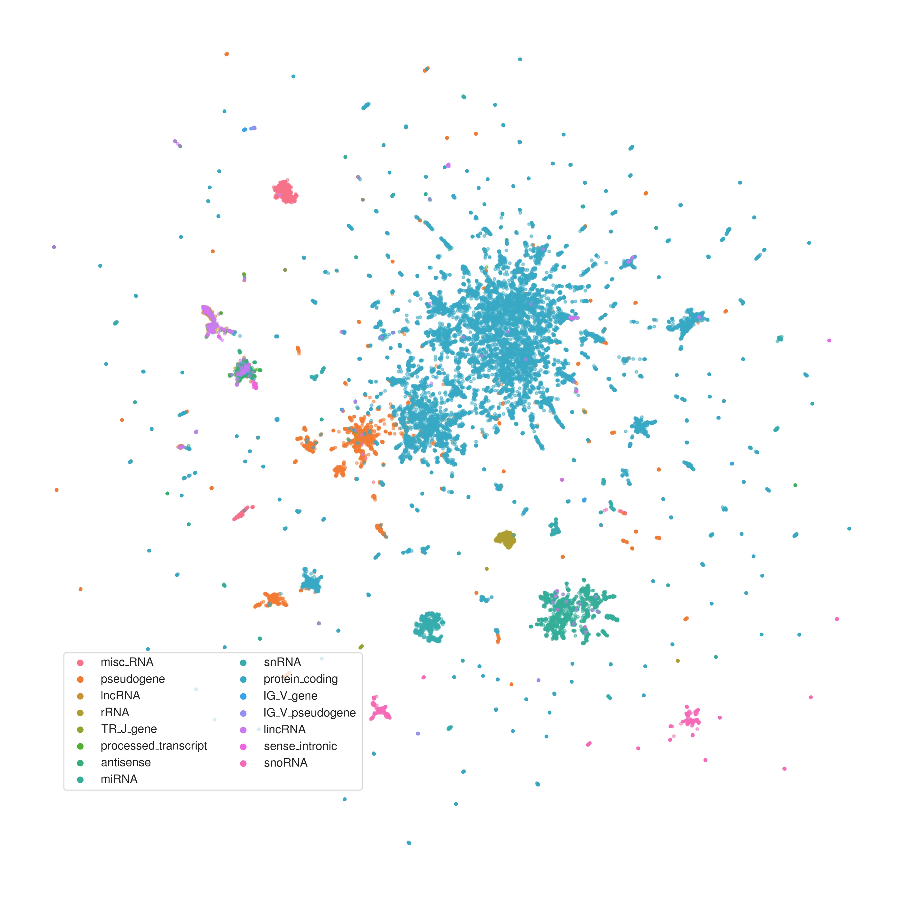
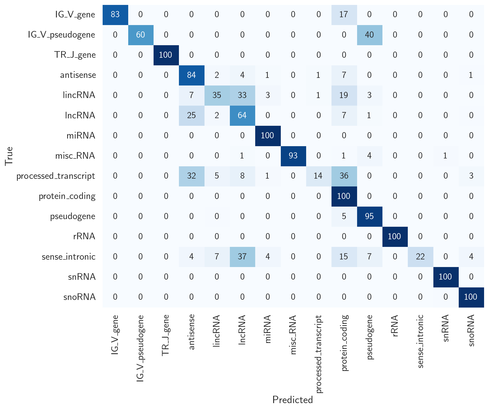
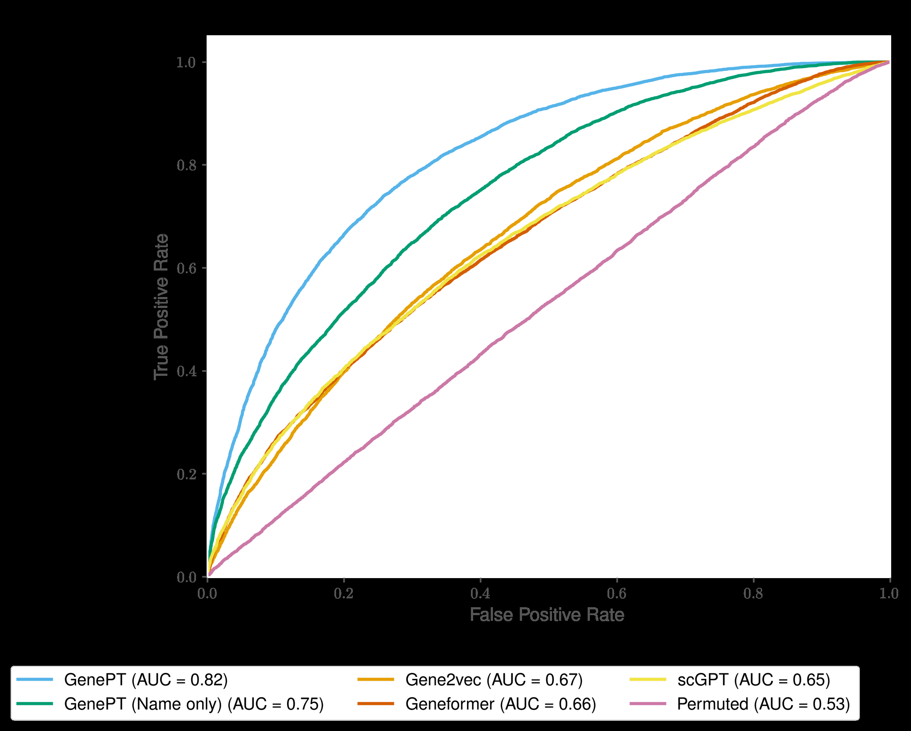
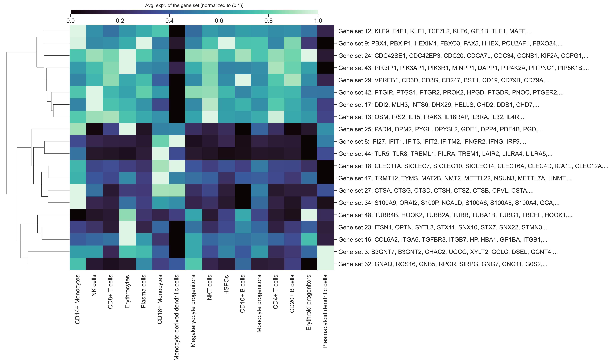
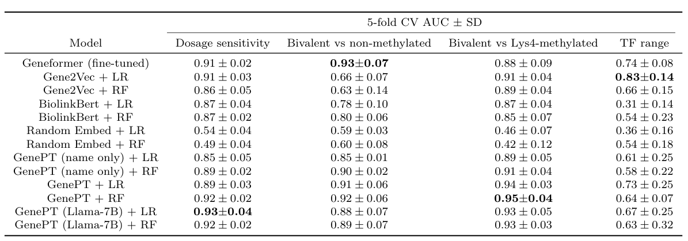

LLM与BioSequence
前言
随着各种测序技术的发展，伴随着全球各地的研究人员的头发的牺牲，人类的知识库中多出了很多有关基因组、转录组、蛋白组的数据。但是如何合理的运用这些来之不易的数据却成了一个大问题，在过去的很长一段时间中，生物信息学的进步弥补这其中的缺陷。然而，这些方法往往涉及到一个问题“不够通用”，也就说，某一种方法只能在一类任务或数据集上使用。同时，注意力机制在自然语言生成（natural language genertaion）上的成功引发了人们的关注：能不能像处理自然语言一样处理序列信息？
在这样的想法的驱动下以及产生了很多优秀的工作，这里，笔者关注了Geneformer、GenePT、scGPT这3项工作。并在这里总结它们设计的用于评估模型表现力的下游任务以及这些任务对应的指标。
GenePT
使用 GPT-3.5 的单个基因的 NCBI 文本描述来生成基因嵌入；通过两种方式生成单细胞嵌入：（i）通过对基因嵌入进行平均，并根据每个基因的表达水平进行加权；（ii）通过使用按表达水平排序的基因名称为每个细胞创建一个句子嵌入；随后利用这些嵌入执行下游任务（如对基因属性和细胞类型的分类）。 GenePT 证明基于文献的大语言模型嵌入是获得生物基础模型的简单而有效的途径。
两种水平的任务
基因水平的任务
- 基因功能类别预测：这是一个多分类预测跳转基于15个最常见的功能基因类别。这些类别的标签是作为
Geneformer这个文章的一部分策划的。 - 基因属性预测任务：这包括4个二元分类任务，这些任务基于Theodoeis 等人提供的开源数据：
- 区分先前确定的剂量敏感转录因子和 剂量不敏感转录因子
- 区分二价基因和非甲基化基因
- 区分仅Lsy4甲基化和非甲基化基因
- 区分长程转录因子和短程转录因子
- 基因-基因相关作用预测：理由Du等人开发并共享的基因-基因相互作用（GGI）基准。训练和测试数据集包括了200000对样本
（gene1,gene2,label），这里的label标记这一对基因是不是相互作用 - 蛋白质-蛋白质
（PPI）相关作用：- 使用了3个数据集
The human binary protein interactions (HuRI) datasetcomprehensive binary protein-protein interactions (Lit-BM)tissue-specific protein-protein functional interaction networks
- 这些数据集的基本形式是
(protein1, protein2, binary label) - 这里的二元标签表明两个蛋白质之间是否存在相互作用
- 首先使用UniProt 转化工具把蛋白质的蛋白质组标志转化为基因名称；如果返回了多个基因名称，就随机选择一个
- 使用了3个数据集
- 基因程序的无监督探索
- 检查基因之间的相互作用，使用来自人类免疫组织数据集的
GenePt嵌入构建了一个基因-基因相互作用的相似性网络 - 基于高变基因之间的余弦相似度构建基因网络
- 应用Louvain 聚类来推到基因程序
- 检查基因之间的相互作用，使用来自人类免疫组织数据集的
- 定性的比较突出的基因程序的趋势与它们对应的细胞特异性表达水平
细胞水平的任务
评估嵌入和底层细胞状态之间的关联：
- 主动脉：包括11种细胞类型，最初由Li等人研究并发表的一个随机20%的数据子集
- 动脉：包含10种细胞类型
- 骨组织：
- 骨骼：包含7种细胞类型
- 骨髓：包含3种已注释的癌症类型和11种细胞类型，总共13,468个细胞
- 胰腺：包含4,218个细胞中注释的11种细胞类型
免疫细胞：从健康个体和多发性硬化症患者中收集，总共3,430个细胞中注释了18种细胞类型，来自12个供体。
对于每个数据集及其关联的元数据注释，在预训练的 GenePT、Geneformer 或 scGPT 嵌入上应用 k 均值聚类，以获得与元数据注释中的类匹配的集群。
选择簇的数量 k 以匹配元数据注释中的类数量。
- 计算调整兰德指数 (ARI) 和调整互信息 (AMI)，以评估派生簇标签与真实元数据标签之间的一致性。
- 推断标签和实际标签之间的较高对齐度（由较高的 ARI 或 AMI 值表示）表明嵌入捕获了更多的生物结构和信号。
使用原始样本的真实注释计算了平均轮廓宽度（ASW），以评估簇的凝聚力和分离度。
- 上下文感知和批量集成：
- 评估 GenePT-s 嵌入是否受到常见批次效应的影响
- Aorta 数据集
- 肌细胞数据集
不同任务的结果
说明结果的时候似乎不可避免的会提到指标，所以干脆在这里就一起说了吧。。。
基因功能类别判断
二维 UMAP 对GenePT 嵌入
34000个基因
15个分类

$l2$ 正则化逻辑回归 ($l{2}$ regularized logistic refression)
训练集和测试集分配是7：3
有15类不同的基因
class-specific accuracies

也就是一个混淆矩阵
基因-基因相互作用预测
比较了3种方法在GGI数据集上的ROC-AUC
GenePT
Gene2Vec
Geneformer
scGPT
Permuted
使用了$l_2-regularized logistic classifier$ 也就是 LR分类器

蛋白-蛋白相互作用预测
- 指标是ROC-AUC
- 3种不同的模型
- GenePT
- scGPT
- geneformer
- 3个数据集
- HuRI
- L-it-BM
- heart tissue
细胞类型特异性激活
- 通过“零样本”方法研究了人类免疫组织数据集中 GenePT 衍生基因程序中的细胞类型特异性激活
- 根据GenePT embeddings之间的余弦相似度构建了相似度图
- 如果两个基因相似度大于0.9就用一个边把两个基因连接起来
- 使用20的分辨率对结果图进行Leiden 聚类

GenePT 嵌入预测染色质动力学和剂量敏感性
- 预测基因在网络动态中的作：
- 剂量敏感与剂量不敏感的转录因子
- 二价基因与非甲基化基因
- 仅 Lys4 甲基化与非甲基化基因
- 长程转录因子与短程转录因子。
- 使用 scikit-learn
- 参数选择默认参数
- 五倍交叉验证的 ROC-AUC
- l2 惩罚逻辑回归 (LR) 或随机森林 (RF) 分类器来评估 GenePT 和 Gene2vec 嵌入的性能

GenePT 学习了细胞生的生物学表征
评估不同潜在细胞表示（通过llm嵌入得到）和生物注释（人类手工标记）之间的关联：
该分析涉及代表来自循环系统（主动脉和动脉）、骨组织（骨骼、骨髓）、胰腺的细胞以及从健康个体和多发性硬化症患者收集的免疫细胞的数据集。
使用预训练的 Geneformer 和 scGPT 嵌入来完成此任务。
计算调整兰德指数 (ARI) 和调整互信息 (AMI)，
以将 k 均值聚类得出的标签与原始样本的真实注释进行比较（值越高表示对齐效果越好）；
使用原始样本的真实注释计算平均轮廓宽度（ASW），以评估簇的凝聚力和分离度。
GenePT 嵌入消除了批次效应
评估 GenePT 嵌入对于批次相关的技术工件（例如患者变异性）是否稳健。
使用 Chaffin 等人的心肌细胞数据集中的 10% 随机样本，以及来自主动脉数据集的 20% 随机样本其中包含健康和扩张主动脉的细胞
将 GenePT 与预训练的 Geneformer 和 scGPT 的性能进行了比较。
这两个样本都用于证明 Geneformer 的实用性。
目的是区分不同的细胞类型
原始数据中细胞类型和患者的批次有强关联
也就是说细胞簇和患者簇之间的ARI很高
这就说明批次效应强烈
但是不太希望嵌入器有这么高的批次效应
幸运的是，GenePT等的ARI都不是很高，说明批次效应不明显
小节
可以看出，在基因任务上的一般思路是先用合适的LLM得到每一种基因的嵌入，也就是实现了从gene text/sequence到gene embedding 的转化。然后利用得到的gene embedding 执行下游任务如：聚类或者分类。这样一来，因为就可以使用聚类或者分类的结果和指标来表征LLM的嵌入效果的好坏。而常见的关于聚类和分类算法的指标有：
- 聚类指标：
- 调整兰德指数（Adjusted Rand Index, ARI）：评估聚类结果与真实标签的匹配度，值越高表示对齐效果越好。
- 调整互信息（Adjusted Mutual Information, AMI）：测量聚类结果与真实标签之间的互信息，值越高表示聚类结果越接近真实标签。
- 轮廓系数（Silhouette Score）：用于衡量聚类的一致性，值越高表示聚类效果越好。
- 平均轮廓宽度（Average Silhouette Width, ASW）：使用原始样本的真实注释计算，以评估簇的凝聚力和分离度。
- 这些指标可以用于将 k 均值聚类得出的标签与原始样本的真实注释进行比较，从而评估聚类的效果。
- 分类指标：
- 准确率（Accuracy）：分类正确的样本数占总样本数的比例。
- 精确率（Precision）：预测为正类的样本中实际为正类的比例。
- 召回率（Recall）：实际为正类的样本中被正确预测为正类的比例。
- F1得分（F1 Score）：精确率和召回率的调和平均数，用于平衡这两者的权重。
- ROC曲线下面积（AUC-ROC）：用于衡量分类模型的整体性能，值越接近1表示模型性能越好。
- 类别特定的准确率（Class-Specific Accuracies）：每个类别的准确率，可以通过混淆矩阵（Confusion Matrix）计算得到。
混淆矩阵（Confusion Matrix）：一个矩阵表示实际类别与预测类别的对比情况，帮助识别模型在哪些类别上表现较好或较差。
scGPT
语言和细胞生物学（其中文本由单词组成；类似地，细胞由基因定义）进行比较，探讨了基础模型在推进细胞生物学和基因研究方面的适用性。利用新兴的单细胞测序数据，构建了单细胞生物学的基础模型 scGPT，该模型基于跨超过 3300 万个细胞的存储库的生成预训练 Transformer。scGPT 有效地提炼了有关基因和细胞的关键生物学见解。通过进一步适应迁移学习，可以优化 scGPT，以在不同的下游应用程序中实现卓越的性能。这包括细胞类型注释、多批次集成、多组学集成、扰动响应预测和基因网络推理等任务。
预训练后的基因嵌入
预训练后，使用统一流形近似和投影（UMAP）可视化3300 万个细胞中 10% 的人类细胞上的 scGPT 细胞嵌入。局部区域和簇的细胞类型通过不同的颜色准确表示。考虑到数据集中包含 400 多项研究，这证明了预训练提取生物变异的卓越能力。
scGPT提高了细胞类型注释的精度
- 微调预训练的 scGPT 以进行细胞类型注释
- 神经网络分类器（network classifier）将 scGPT 变压器输出细胞嵌入作为输入并输出细胞类型的分类预测。
- 整个模型在带有专家注释的参考数据集上使用交叉熵进行训练——微调
- 然后用于预测保留的查询数据分区上的细胞类型——验证
- 对不同的数据集进行了广泛的实验，以评估 scGPT 在细胞类型注释方面的性能。
- 首先，用 scGPT 来预测人类胰腺数据集中的细胞类型，并考虑2个衡量指标
- 预测
- 混淆矩阵
- 嵌入热图
- 接下来，在多发性硬化症 (MS) 疾病数据集上测试了该模型。
- 该模型在健康人体免疫细胞的参考分区上进行了微调，并根据对 MS 状况细胞的预测进行了评估。
- 同样考虑了混淆矩阵和热图作为衡量指标
- 最后，在三个数据集中对微调后的 scGPT 与另外两种最近基于 Transformer 的方法 TOSICA31 和 scBERT32 进行了基准测试。
- 分类指标包括准确度、精确度、召回率和 F1
- 首先，用 scGPT 来预测人类胰腺数据集中的细胞类型，并考虑2个衡量指标
scGPT 预测不可见的遗传扰动反应
测序和基因编辑技术的最新进展极大地促进了大规模扰动实验，使得能够表征细胞对各种遗传扰动的反应。这种方法对于揭示新的基因相互作用和推进再生医学具有巨大的希望。然而，潜在基因扰动的巨大组合空间很快就超过了实验可行性的实际极限。为了克服这一限制，scGPT 可用于利用从已知实验中的细胞反应中获得的知识，并推断它们以预测未知的反应。在基因维度上利用自注意力机制可以对受干扰的基因与其他基因的响应之间复杂的相互作用进行编码。通过利用这种能力，scGPT 可以有效地从现有的实验数据中学习，并准确预测看不见的扰动的基因表达反应。
预测不可见基因扰动
扰动预测任务评估
- 使用白血病细胞系的三个 Perturb-seq 数据集评估了scGPT：
- Adamson 数据集
- 包含 87 个单基因扰动
- 精选的 Replogle 数据集
- 包含 1,823 个单基因扰动
- Norman 数据集
- 包含 131 个单基因扰动
- 包含 105 个单基因扰动和两基因扰动
- Adamson 数据集
- 使用白血病细胞系的三个 Perturb-seq 数据集评估了scGPT：
评估方法
- 为了评估 scGPT 的扰动预测能力，对扰动子集的模型进行了微调，以在给定输入控制细胞状态和干预基因的情况下预测扰动的表达谱。
- 接下来，模型对涉及看不见的基因的扰动进行了测试。
评估指标
- Pearsondelta 指标
- 衡量预测和观察到的扰动后表达变化之间的相关性。
- 前 20 个变化最显著基因的指标
- 在差异表达基因上表示为 $Pearson_{\delta}$。
- Pearsondelta 指标
结果
- 使用原始研究的注释，发现相同功能组的扰动条件聚集在邻近区域
- 使用 Leiden 对预测的表达进行聚类，观察到这些聚类与扰动组合中的“显性基因”表现出高度关联。
示例
- KLF1 基因相关的圆圈簇
- 表明该簇中的数据点经历了涉及 KLF1 和另一个基因（即 KLF1 + X）的组合扰动。
- KLF1 和 CNN1 簇
- 验证了相应的预测表达在这些区域中专门高，这与 CRISPRa（CRISPR介导的转录激活）Perturb-seq 实验的预期结果一致。
- 显性基因簇
- 证明了 scGPT 揭示扰动组合之间关联的能力。
- KLF1 基因相关的圆圈簇
计算机逆扰动预测
scGPT 的反向扰动预测能力
scGPT 能够预测给定结果细胞状态的遗传扰动来源，其称为计算机反向扰动预测。
- 进行这种反向预测的理想预测模型可用于推断谱系发育的重要驱动基因或促进潜在治疗基因靶标的发现。
- 这种能力的一个假设应用示例可能是预测影响细胞从疾病状态中恢复的 CRISPR 靶基因。
为了展示反向扰动预测的有效性，使用了 Norman 数据集的一个子集，重点关注涉及 20 个基因的扰动。
- 该组合空间总共由 210 个单基因或两基因扰动组合组成。
- 使用 39 个（18%）已知扰动（图中的训练组）对 scGPT 进行微调。
- 然后，对未见过的扰动细胞状态的查询测试了模型，scGPT 成功预测了扰动源（在排名最高的预测内），从而生成了观察到的结果。
具体示例：
- scGPT 将 CNN1 + MAPK1 基因的正确扰动列为一个测试示例的最佳预测。
- 将 FOSB + UBASH3B 基因的正确扰动列为另一个测试示例的第二预测。
整体表现：
- scGPT 在前 1 个预测中平均识别出 91.4% 的相关扰动。
- 在前 8 个预测中识别出 65.7% 的正确扰动远远优于 GEARS 和差异基因基线。
scGPT 支持多批次和多组学集成
多批次 scRNA-seq 集成
整合多个 scRNA-seq 数据集的挑战
- 整合来自不同批次的多个 scRNA-seq 数据集在同时保留整合数据的生物方差和消除技术批次效应方面提出了独特的挑战。
- 为了整合测序样本，通过学习恢复隐藏基因表达的统一细胞呈现方式，以自我监督的方式微调 scGPT。
与其他集成方法的比较
- 在的基准测试实验中，将 scGPT 与三种流行的集成方法进行了比较：scVI38、Seurat39 和 Harmony40。
- 评估在三个集成数据集上进行，即 COVID-19（18 批）12、外周血单核细胞（PBMC）10k（两批）41 和鼻周皮质（两批）42 数据集。
PBMC 10k 数据集的性能
- 在 PBMC 10k 数据集中，scGPT 成功分离了所有细胞类型。
- scGPT 的整合性能得到了其高生物保护评分的进一步支持，AvgBIO 评分为 0.821，比对比方法高 5-10%。
AvgBIO 分数
- AvgBIO 分数汇总了三种细胞类型聚类指标，即标准化互信息 (NMIcell)、调整兰德指数 (ARIcell) 和平均轮廓宽度 (ASWcell)
- scGPT 还表现出了相当大的性能，用于集成即使没有微调的 PBMC 10k 数据集，突出了预训练的普遍性。
鼻周皮层数据集的性能
- 在鼻周皮层数据集的背景下，scGPT 相对于所有其他方法仍然具有竞争力。
- 这一发现凸显了从全人类数据集中学到的特征应用于特定器官或组织（例如大脑）时的可转移性和鲁棒性。
其他指标表现
- scGPT 在所有集成指标上始终取得有竞争力的分数，并表现出对生物信号的强大保护。
- 还制定了加速集成任务微调过程的策略，包括冻结特定模型层并排除不表达的基因，同时保持与原始方法相当的结果。
单细胞多组学整合
scMultiomic 数据集整合
- 单细胞多组学 (scMultiomic) 数据结合了遗传调控的多种观点，例如表观遗传、转录组和翻译活动，在保留生物信号的同时聚合细胞表征提出了独特的挑战。
- scGPT 通过有效地提取不同组学数据集中的集成细胞嵌入来解决这一挑战。
与其他方法的比较
- 在 10x 多组 PBMC 数据集43 中，将 scGPT 与两种最先进的方法 scGLUE13 和 Seurat (v.4)44 进行比较。
- scGPT 是唯一能够成功生成 CD8+ 初始细胞的独特簇的方法。
- 在骨髓单核细胞 (BMMC)45 的配对基因表达和蛋白质丰度数据集上测试了 scGPT。
- scGPT 呈现出比 Seurat (v.4) 更明确的簇结构，AvgBIO 分数提高了 9%。
- scGPT 能够将 CD4+ 初始 T 细胞和 CD4+ 激活 T 细胞分离为两个不同的簇，进一步证实了该模型捕获免疫细胞亚群之间细微差异的能力。
- 在马赛克数据集成设置中，使用 ATAC 和选择抗原分析 (ASAP) 人类 PBMC 数据集46 作为示例。
- scGPT 表现出卓越的批量校正性能，特别是在 B、骨髓和自然杀伤 (NK) 细胞组中。
- scGPT 表现出卓越的细胞类型聚类性能，并在各种基准生物保护指标中表现出稳健性。
- 在 10x 多组 PBMC 数据集43 中，将 scGPT 与两种最先进的方法 scGLUE13 和 Seurat (v.4)44 进行比较。
scGPT 揭示特定细胞状态的基因网络
GRN 背后的转录因子、辅因子、增强子和靶基因之间的相互作用介导重要的生物过程。现有的 GRN 推断方法通常依赖于静态基因表达的相关性或伪时间估计作为因果图的代理。 scGPT 通过基因表达的生成模型进行优化，在其基因嵌入以及注意力图中隐式编码了这种关系。因此，通过探测预训练或微调模型的 scGPT 嵌入和注意力图来提出 GRN 推理工作流程。
基因嵌入构建了一个相似性网络，该网络需要在数据集级别上进行基因间相互作用。注意力图进一步捕捉不同细胞状态下独特的基因网络激活模式。
基因标记嵌入的分组和区分
- scGPT 展示了其通过学习基因标记嵌入对功能相关基因进行分组并区分功能不同基因的能力。
- 在图 5a 中，使用预训练的 scGPT 模型中的基因嵌入来可视化人类白细胞抗原 (HLA) 蛋白的相似性网络，从而进行了健全性检查。
- 在这种零样本设置中，scGPT 模型成功突出显示了与明确表征的 HLA 类别相对应的两个簇：HLA I 类和 HLA II 类基因。
HLA 类别的功能
- 这些类别编码在免疫环境中发挥不同作用的抗原呈递蛋白。
- HLA I 类蛋白（由 HLA-A、HLA-C 和 HLA-E 等基因编码）可被 CD8+ T 细胞识别并介导细胞毒性作用。
- HLA II 类蛋白（由 HLA-DRB1、 HLA-DRA 和 HLA-DPA1）被 CD4+ T 细胞识别并触发更广泛的辅助功能。
- 在“免疫人类”数据集上微调了 scGPT 模型，并探索了该数据集中存在的免疫细胞类型特有的 CD 基因网络。
- 这些类别编码在免疫环境中发挥不同作用的抗原呈递蛋白。
GRN 分析
- 为了进行 GRN 分析，使用了与集成任务相同的微调策略。
- 预训练的 scGPT 模型成功识别了编码用于 T 细胞激活的 T3 复合物的基因组（CD3E、CD3D 和 CD3G）、用于 B 细胞信号传导的 CD79A 和 CD79B 以及作为 HLA I 类分子共受体的 CD8A 和 CD8B 49。
- 此外，微调的 scGPT 模型强调了 CD36 和 CD14 之间的联系。
GRN 指的是基因调控网络（Gene Regulatory Network），它是一种描述基因之间相互作用的网络结构。在生物学中，基因调控网络描述了基因与转录因子、miRNA 和其他基因调控元件之间的相互作用关系，以及这些相互作用如何影响基因的表达。基因调控网络对于理解基因调控的复杂性和细胞功能的调控机制非常重要，因为它们可以揭示基因调控网络中的关键因素和通路，并帮助研究人员理解生物体内的信号传导和细胞命运决定过程。
小节
scGPT和GenePT在下游任务和指标上有一定的重合。相比于GenePT，scGPT的任务要更复杂一些，好多也是第一次见，下面就分析一下。
基因扰动分析和计算机逆扰动预测是在基因组学和生物信息学领域中常见的任务，它们通常用于理解基因在细胞状态和生物学过程中的功能和影响。下面是它们的一般流程和一些评价指标：
基因扰动分析：
- 扰动数据收集： 收集包含基因扰动实验数据的数据集，例如基因编辑技术（如CRISPR）引发的基因敲除、过表达或突变。
- 数据预处理： 对扰动实验数据进行预处理，包括数据清洗、去除噪声和异常值等。
- 特征提取： 从基因扰动数据中提取特征，这可以包括基因表达水平的变化、蛋白质互作网络的改变等。
- 分析和解释： 使用统计学和机器学习技术分析和解释基因扰动对生物过程的影响，可能会识别关键的调节基因、通路或生物学过程。
- 评价指标： 常用的评价指标包括：
- 差异表达基因（DEGs）数量： 受扰动后基因表达水平显著变化的基因数量。
- 富集分析： 基因扰动是否导致某些功能通路的显著富集。
- 网络拓扑分析： 基因扰动是否影响了基因调控网络的结构和稳定性。
- 生物学效应评估： 对于特定生物过程或疾病，基因扰动是否导致预期的生物学效应。
计算机逆扰动预测：
- 建模： 使用机器学习或深度学习方法构建模型，该模型可以从基因表达数据中预测出导致这些表达模式的基因扰动。
- 数据准备： 准备包含基因表达数据和相应基因扰动信息的训练集和测试集。
- 特征工程： 对基因表达数据进行特征工程，可能包括降维、标准化或提取特征。
- 模型训练： 使用训练集训练逆扰动预测模型，调整模型参数以提高预测性能。
- 模型评估： 使用测试集评估模型的性能，通常使用常见的回归或分类指标进行评估。
- 评价指标： 常见的评价指标包括：
- 均方误差（MSE）： 预测值与真实值之间的平均平方差。
- 相关系数（Correlation Coefficient）： 预测值和真实值之间的线性相关性。
- 准确率、召回率、F1 分数： 对于分类任务，评估模型对基因扰动的分类准确性。
综合来看，基因扰动分析和计算机逆扰动预测是通过对基因表达数据进行分析和建模来理解基因功能和影响的重要工具，评价指标可以帮助评估模型的性能和预测能力。